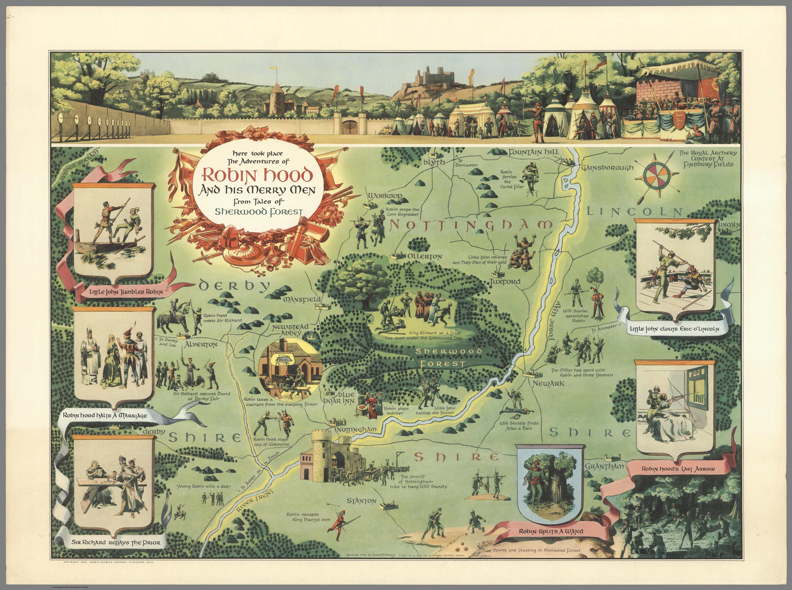
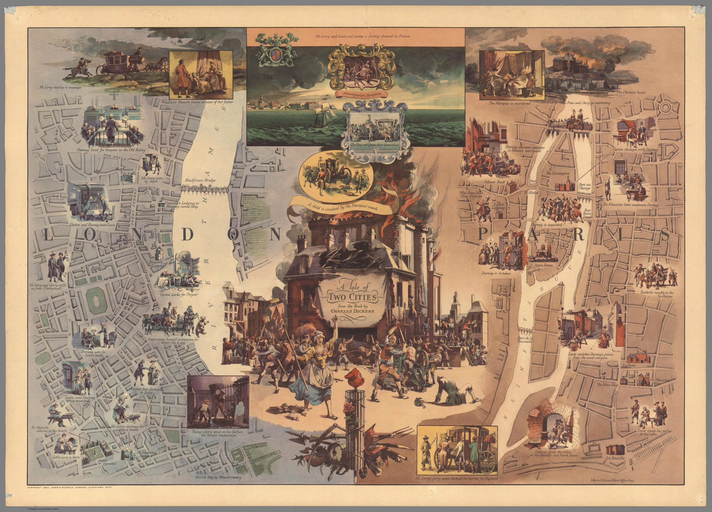
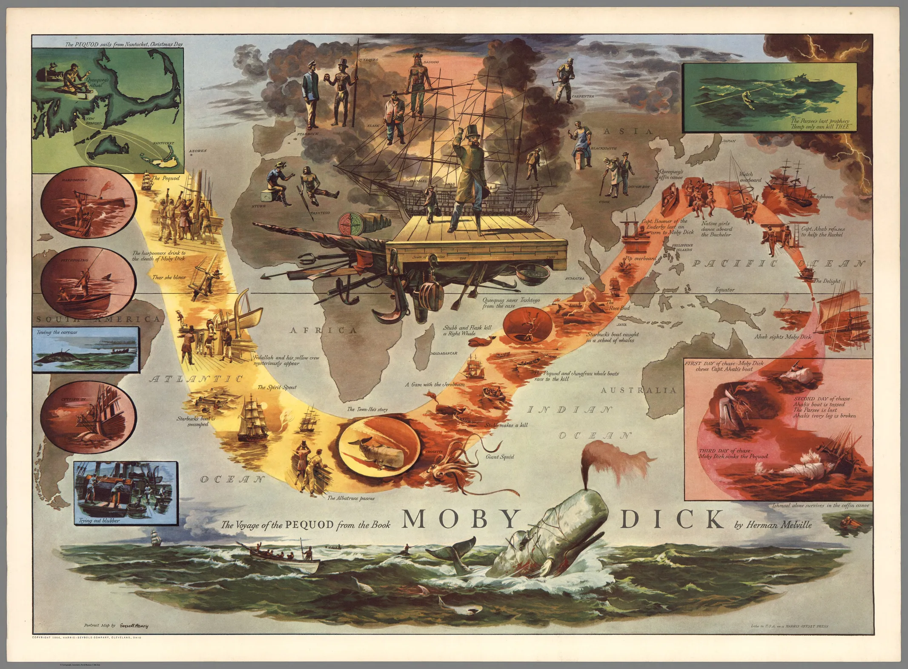
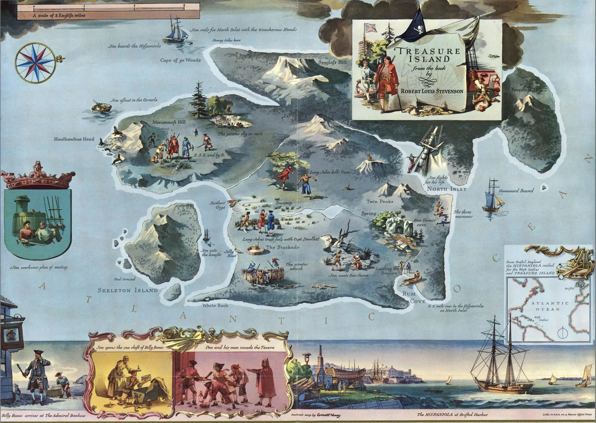
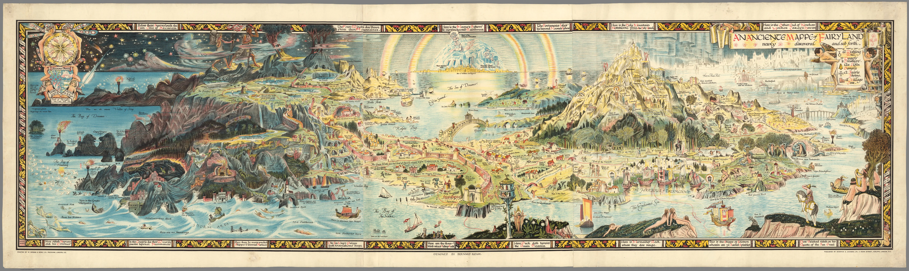
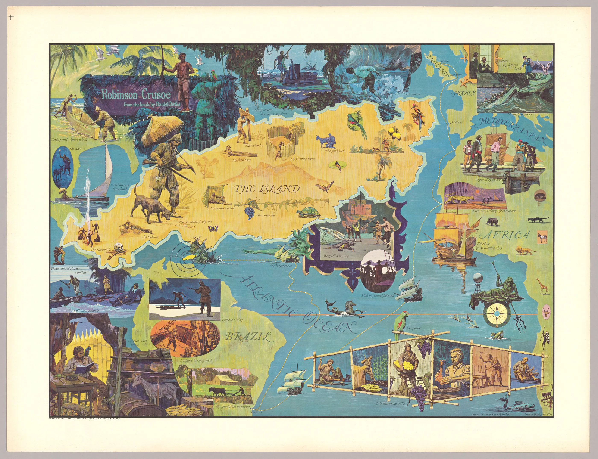
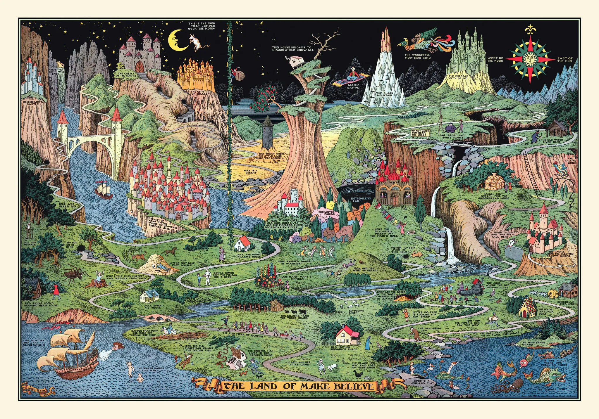

De magnifiques cartes qui, bien que fictives, laissent libre cours à l'imagination.
Cartes fictives

"Here took place the adventures of Robin Hood and his merry men" de Henry Edward Everett (1955)
David Rumsey Map Center Stanford University Libraries

"A Tale of two cities : from the book by Charles Dickens" de Henry Edward Everett (1957)
David Rumsey Map Center Stanford University Libraries

"The Voyage of the Pequod from the Book Moby Dick by Herman Melville" de Henry Edward Everett (1956)
David Rumsey Map Center Stanford University Libraries

"Treasure Island from the book by Robert Louis Stevenson" de Henry Edward Everett (1981)
David Rumsey Map Center Stanford University Libraries

"An Ancient Mappe of Fairyland" de Bernard Sleigh (1918)
David Rumsey Map Center Stanford University Libraries

"Robinson Crusoe from the book by Daniel Defoe" de Ken Riley (1964)
David Rumsey Map Center Stanford University Libraries

"The Land of Make Believe" de Jaro Hess (1930)
David Rumsey Map Center Stanford University Libraries